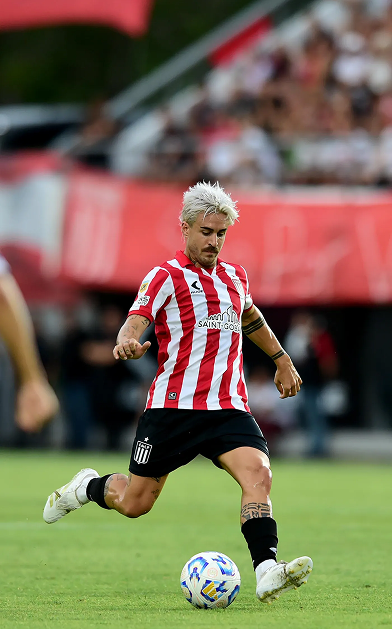
Deportes
Estudiantes
Ver más ❯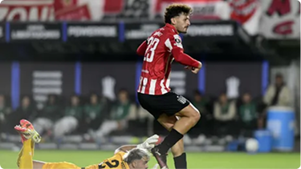
Mercado de pases. ¿Cómo se resolverá el futuro de Luciano Giménez en Estudiantes?
Reporte vecinal 📢
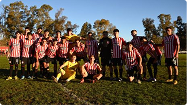
Cierre victorioso. La reserva de Estudiantes cerró el Torneo Proyección con triunfo ante Central Córdoba
Reportado por Nicolás Rinaldi
Gimnasia
Ver más ❯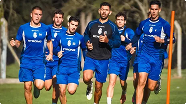
Preparación intensa. Gimnasia cerró la primera semana de pretemporada en Estancia Chica y planifica más doble turno
Reporte vecinal 📢
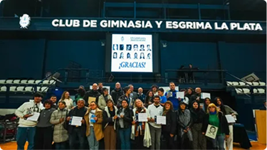
A 50 años de la dictadura. Gimnasia entregó nuevos carnets honorarios a víctimas del terrorismo de Estado
Reportado por Marcelo Bonfante
Novedades. Día clave por la continuidad de Germán Conti en Gimnasia: el último llamado
General
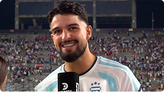
¿Lo sabías?. La historia detrás del afectuoso saludo del Flaco López para La Plata
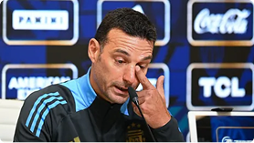
Video. Scaloni se emocionó por una pregunta de Palermo en conferencia y recordó su paso por Estudiantes
Viví la previa. Argentina comienza la defensa del título en el Mundial 2026
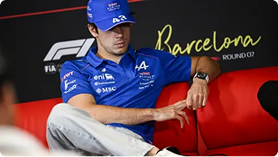
Video. Colapinto habló de la orden de equipo de Alpine y celebró los puntos doble en Barcelona
Reporte vecinal 📢
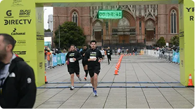
Atención corredores. ¿Cuándo y dónde retirar el kit de la Media Maratón de La Plata?
Reportado por Ana Rodríguez
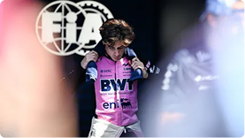
¿Qué pasó?. Colapinto fue sancionado por la FIA y perdió dos puestos en el GP de Barcelona
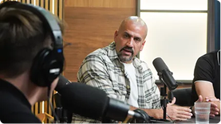
Contundente. Los cuestionamientos a la AFA y el pedido de cambios profundos en el fútbol argentino
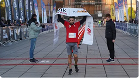